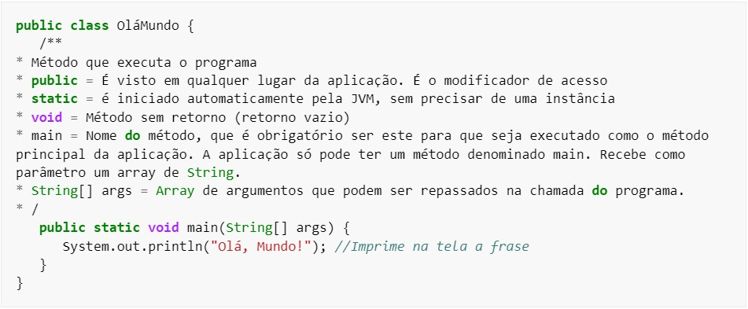
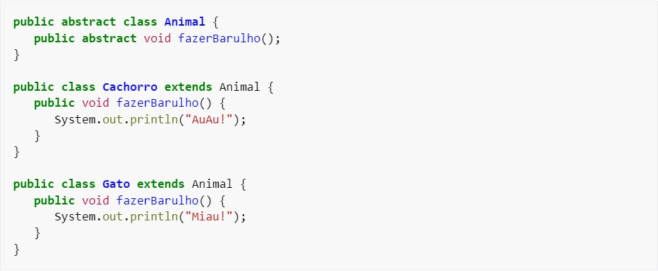
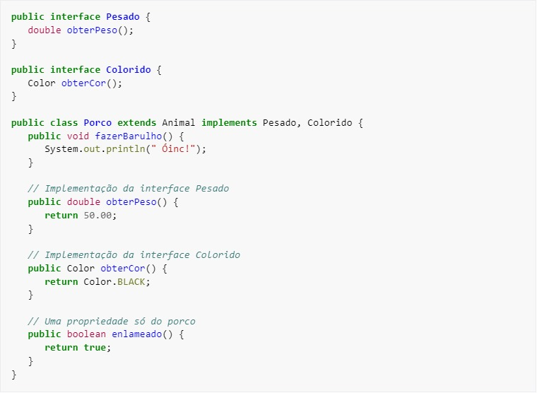
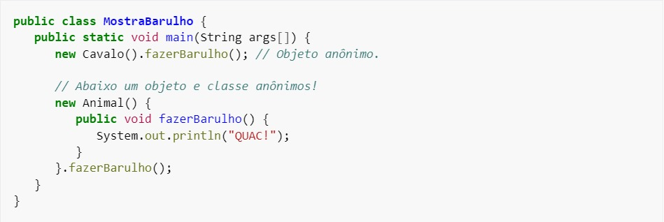
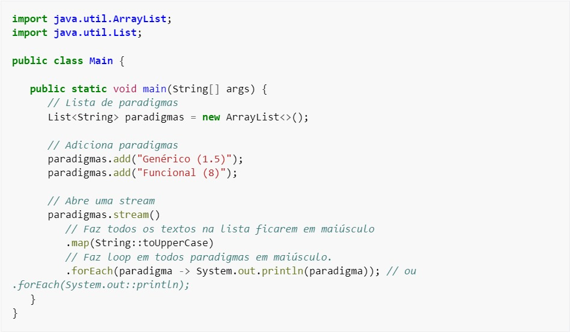

Java (linguagem de programação)
Java é uma linguagem de programação orientada a objetos desenvolvida na década de 90 por uma equipe de programadores chefiada por James Gosling, na empresa Sun Microsystems, que em 2008 foi adquirido pela empresa Oracle Corporation. Diferente das linguagens de programação modernas, que são compiladas para código nativo, Java é compilada para um bytecode que é interpretado por uma máquina virtual (Java Virtual Machine, abreviada JVM). A linguagem de programação Java é a linguagem convencional da Plataforma Java, mas não é a sua única linguagem. A J2ME é utilizada em jogos de computador, celular, calculadoras, ou até mesmo o rádio do carro.
História
Em 1991, na Sun Microsystems, foi iniciado o Green Project, o berço do Java, uma linguagem de programação orientada a objetos. Os mentores do projeto eram Patrick Naughton, Mike Sheridan, e James Gosling. Eles acreditavam que, eventualmente, haveria uma convergência dos computadores com os equipamentos e eletrodomésticos frequentemente usados pelas pessoas no seu dia-a-dia. Para provar a viabilidade desta ideia, treze pessoas trabalharam durante dezoito meses. No verão de 1992 eles emergiram de um escritório de Sand Hill Road (no Menlo Park), com uma demonstração funcional da ideia inicial. O protótipo se chamava *7 (lê-se “Star Seven”), um controle remoto com uma interface gráfica touchscreen, acompanhado de um mascote, hoje amplamente conhecido no mundo Java, o Duke, que tinha a função de ser um guia virtual ajudando usuários a utilizar o equipamento. O star-seven tinha a habilidade de controlar diversos dispositivos e aplicações. James Gosling especificou uma nova linguagem de programação para o *7. chamada de “Oak”, que quer dizer carvalho, uma árvore que ele podia observar quando olhava através da sua janela. O próximo passo era encontrar um mercado para o star-seven. A equipe achava que uma boa ideia seria controlar televisões e vídeo por demanda com o equipamento. Eles construíram uma demonstração chamada de MovieWood, mas infelizmente era muito cedo para que o vídeo por demanda bem como as empresas de TV a cabo pudessem viabilizar o negócio. A ideia que o *7 tentava vender, hoje já é realidade em programas interativos e também na televisão digital. Permitir ao telespectador interagir com a emissora e com a programação em uma grande rede de cabos, era algo muito visionário e estava muito longe do que as empresas de TV a cabo tinham capacidade de entender e comprar. A ideia certa, na época errada. Entretanto, o estouro da internet aconteceu e rapidamente uma grande rede interativa estava se estabelecendo. Era este tipo de rede interativa que a equipe do *7 estava tentando vender para as empresas de TV a cabo. E, da noite para o dia, não era mais necessário construir a infraestrutura para a rede, ela simplesmente estava lá. Gosling foi incumbido de adaptar o Oak para a internet e em janeiro 1995 foi lançada uma nova versão do Oak que foi rebatizada para Java — diz-se que inspirado no café que o time de desenvolvimento consumia, oriundo da ilha de Java, e que também está presente na logomarca Java. A tecnologia Java tinha sido projetada para se mover por meio das redes de dispositivos heterogêneos, redes como a internet. Agora aplicações poderiam ser executadas dentro dos navegadores nos Applets Java e tudo seria disponibilizado pela internet instantaneamente. Foi o estático HTML dos navegadores que promoveu a rápida disseminação da dinâmica tecnologia Java. A velocidade dos acontecimentos seguintes foi assustadora, o número de usuários cresceu rapidamente, grandes fornecedores de tecnologia, como a IBM anunciaram suporte para a tecnologia Java. Desde seu lançamento, em maio de 1995, a plataforma Java foi adotada mais rapidamente do que qualquer outra linguagem de programação na história da computação. Em 2004 Java atingiu a marca de 3 milhões de desenvolvedores em todo mundo. Java continuou crescendo e hoje é uma referência no mercado de desenvolvimento de software. Java tornou-se popular pelo seu uso na internet e hoje possui seu ambiente de execução presente em navegadores, mainframes, sistemas operacionais, celulares, palmtops, cartões inteligentes etc.
Padronização
Em 1997 a Sun Microsystems tentou submeter a linguagem a padronização pelos órgãos ISO/IEC e ECMA, mas acabou desistindo. Java ainda é um padrão de fato, que é controlada através da JCP (Java Community Process). Em novembro de 2006, a Sun liberou a maior parte do Java como um software livre sob os termos da GNU GPL (General Public License), finalizando o processo em maio de 2007, tornando praticamente todo o código Java como software de código aberto, menos uma pequena porção da qual a Sun não possui os direitos legais.
Aquisição pela Oracle
Em 2008 a Oracle Corporation adquire a empresa responsável pela linguagem Java, a Sun Microsystems, por US$ 7,4 bilhões, com o objetivo de levar o Java e outros produtos da Sun ao dispor dos consumidores.
Versões
| Versão | Data |
|---|---|
| JDK1.0 | 23 de janeiro de 1996 |
| JDK 1.1 | 19 de fevereiro de 1997 |
| J2SE 1.2 | 8 de dezembro de 1998 |
| J2SE 1.3 | 8 de maio de 2000 |
| J2SE 1.4 | 6 de fevereiro de 2002 |
| J2SE 5.0 | 30 de setembro de 2004 |
| Java SE 6 | 11 de dezembro de 2006 |
| Java SE 7 | 28 de julho de 2011 |
| Java SE 8 (LTS) | 18 de março de 2014 |
| Java SE 9 | 21 de setembro de 2017 |
| Java SE 10 | 20 de março de 2018 |
| Java SE 11 (LTS) | 25 de setembro de 2018 |
| Java SE 12 | 19 de março de 2019 |
| Java SE 13 | 17 de setembro de 2019 |
| Java SE 14 | 17 de março de 2020 |
| Java SE 15 | 15 de setembro de 2020 |
| Java SE 16 | 16 de março de 2021 |
| Java SE 17 (LTS) | 14 de setembro de 2021 |
| Java SE 18 | 22 de março de 2022 |
| Java SE 19 | 20 de setembro de 2022 |
| Java SE 20 | 21 de março de 2023 |
| Java SE 21 (LTS) | 19 de setembro de 2023 |
| Java SE 22 | 19 de março de 2024 |
Características
A linguagem Java foi projetada tendo em vista os seguintes objetivos:
- Orientação a objetos - Baseado no modelo de Simular;
- Portabilidade - Independência de plataforma - "escreva uma vez, execute em qualquer lugar" ("write once, run anywhere");
- Recursos de Rede - Possui extensa biblioteca de rotinas que facilitam a cooperação com protocolos TCP/IP, como HTTP e FTP;
- Segurança - Pode executar programas via rede com restrições de execução.
Além disso, podem-se destacar outras vantagens apresentadas pela linguagem:
- Sintaxe similar a C/C++
- Facilidades de Internacionalização - Suporta nativamente caracteres Unicode;
- Simplicidade na especificação, tanto da linguagem como do "ambiente" de execução (JVM);
- É distribuída com um vasto conjunto de bibliotecas (ou APIs);
- Possui facilidades para criação de programas distribuídos e multitarefa (múltiplas linhas de execução num mesmo programa);
- Desalocação de memória automática por processo de coletor de lixo;
- Carga Dinâmica de Código - Programas em Java são formados por uma coleção de classes armazenadas independentemente e que podem ser carregadas no momento de utilização.
Licença
A Sun disponibiliza a maioria das distribuições Java gratuitamente e obtém receita com programas mais especializados como o Java Enterprise System. Em 13 de novembro de 2006, a Sun liberou partes do Java como software livre, sob a licença GNU General Public License. A liberação completa do código fonte sob a GPL ocorreu em maio de 2007.
Exemplos de código
Método main

Classes
Exemplo:

O exemplo acima cria a classe Animal e duas classes derivadas de Animal. É importante observar que nas classes derivadas temos a redefinição do método fazerBarulho(). Esta redefinição é classificada como uma sobreposição (override) de métodos. O conceito de sobreposição somente pode ser identificado e utilizado quando temos classes dispostas em um relacionamento de herança. Java não suporta herança múltipla, devido a possibilidade de uma classe pai ter um método com o mesmo nome de outra classe pai, e gerar possíveis falhas ao chamar o método, e todas as classes em Java derivam da classe Object. A única possibilidade de se ver herança múltipla em Java é no uso de interfaces, pois uma classe pode implementar várias interfaces.
Interfaces
Uma interface modela um comportamento esperado. Pode-se entendê-la como uma classe que contenha apenas métodos abstratos. Embora uma classe não possa conter mais de uma super classe, a classe pode implementar mais de uma interface. Exemplo:

Objetos anônimos
Podemos ter também objetos anônimos, onde não é necessário instanciar o objeto em uma variável para utilizá-lo. Exemplo:

Programação funcional
A partir da versão 8, o Java adiciona aspectos de linguagem funcional, permitindo utilizar técnicas funcionais, como mapeamento, redução, bem como tratar funções como variáveis. Para tanto, a linguagem utiliza interfaces para esse tipo de manipulação, quase que eliminando a necessidade do uso das chamadas classes anônimas.
Exemplo:

Ferramentas
Frameworks
É possível utilizar frameworks para facilitar o desenvolvimento de aplicações, dos quais os mais utilizados podem-se destacar:
- Hibernate ferramenta para ORM
- Junit ferramenta para auxiliar na criação de testes unitários
- Log4j ferramenta para facilitar a criação de logs na aplicação
- Spring ferramenta que auxilia principalmente implementação de injeção de dependências e inversão de controle
- Struts controlador MVC (Model 2) web
Ambientes de desenvolvimento
É possível desenvolver aplicações em Java através de vários ambientes de desenvolvimento integrado (IDEs). Dentre as opções mais utilizadas pode-se destacar:
- BlueJ — um ambiente desenvolvido por uma faculdade australiana (considerado muito bom para iniciantes)
- JCreator — (gratuito/shareware) — um ambiente desenvolvido pela Xinox (recomendado para programadores iniciantes)
- jEdit — (recomendado para programadores iniciantes)
- Eclipse — (recomendado para programadores fluentes)
IDEs completas (recomendado para programadores profissionais)
- Eclipse — um projeto aberto iniciado pela IBM
- IntelliJ IDEA (comercial) — uma IDE desenvolvida pela JetBrains
- JBuilder — um ambiente desenvolvido pela empresa Borland
- JDeveloper (gratuito OTN) — uma IDE desenvolvida pela empresa Oracle
- NetBeans (software livre) — uma IDE desenvolvida pela Sun Microsystems
Outras IDEs (menos populares)
- Gel (IDE) — open source
- Greenfoot — bem parecido com o BlueJ
- JGRASP — bom para intermediários, feito pela equipe do Projeto GRASP
- Java Studio Creator/Enterprise (gratuito SDN) um ambiente criado pela empresa Sun Microsystems
- Workshop for WebLogic (comercial/desenvolvedor) um ambiente criado pela empresa Oracle
- WebSphere Studio Application Developer um ambiente criado pela empresa IBM